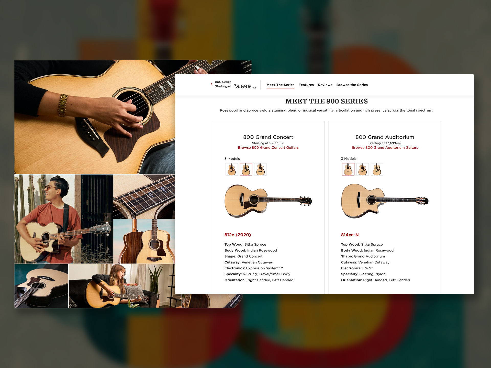
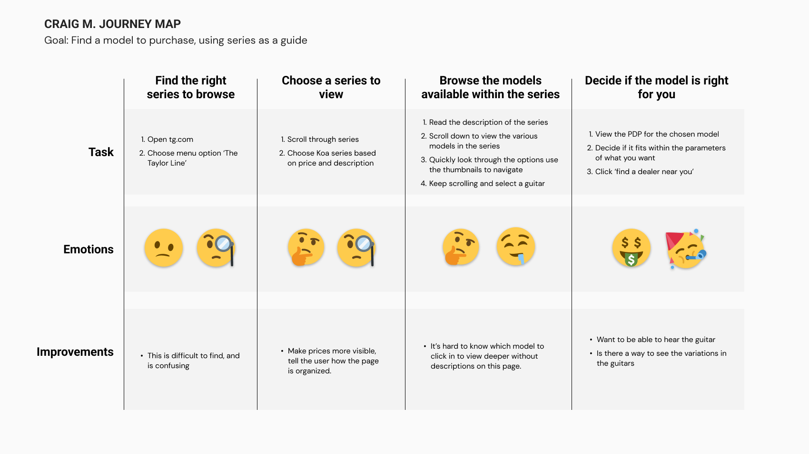
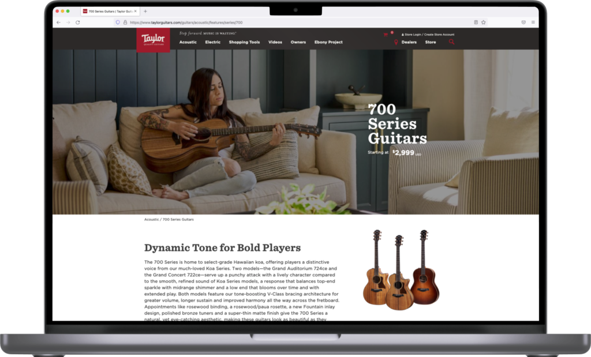
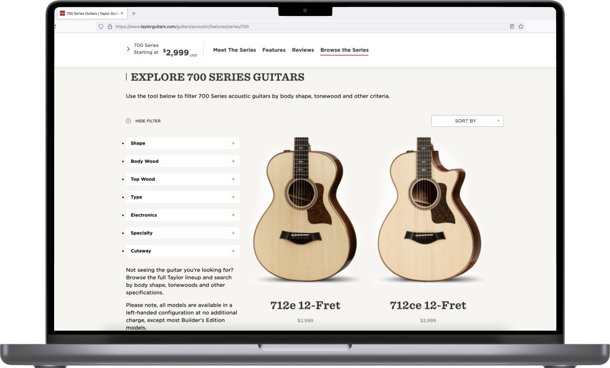
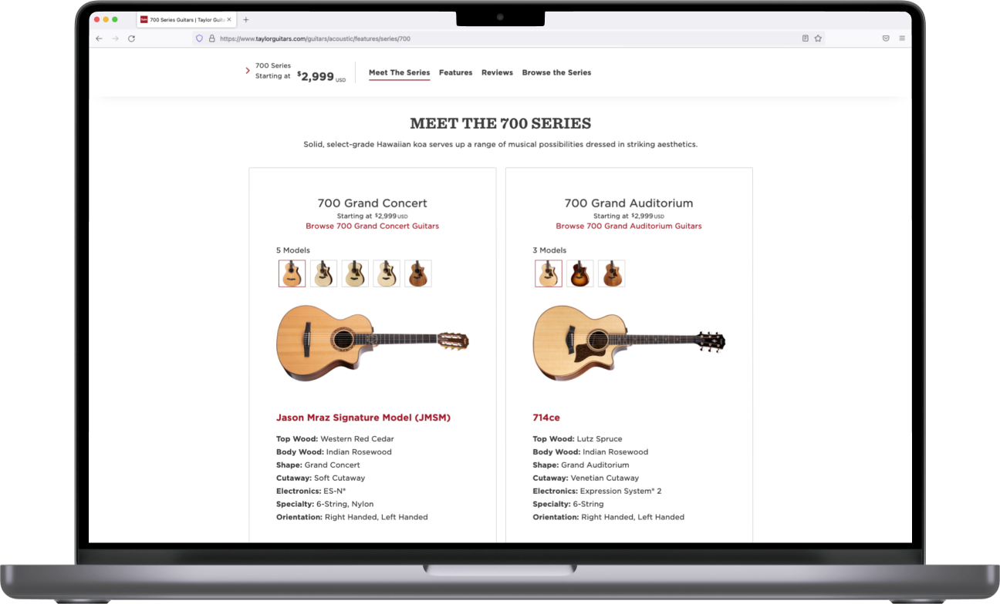
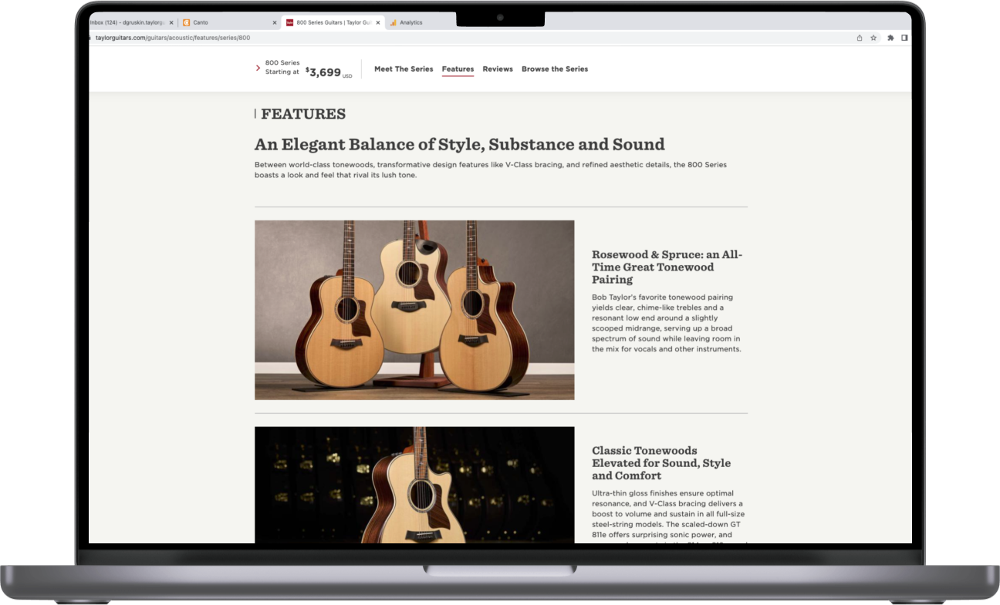

Taylor offers hundreds of guitar models. That's a feature until it becomes a reason not to buy. This redesign fixed the information problem that was stopping people mid-journey.

The series pages were one of the primary entry points for customers exploring guitars. With hundreds of options across dozens of series, users consistently got stuck. The differences between models weren't clear. The information hierarchy wasn't helping anyone make a decision. The result was analysis paralysis — users bailing without continuing their journey.
The design challenge was volume. Series overviews, model comparisons, specs, imagery, pricing, and clear paths to product pages — all without overwhelming someone who might be a first-time buyer or a collector hunting something specific.
The solution had to work for both.





The old series pages let users look at guitars. The new ones guided users toward a guitar. That distinction — between passive browsing and active decision support — drove every design choice on the project.
The 77% of users who continued from series pages to product pages after the redesign weren't being pushed. They were being led — by clearer information, better imagery, and a page structure that matched how people actually shop for something they care about.
A round-two cycle with direct user testing and CRO experiments would have pushed these numbers further. The groundwork was laid. The backlog was full. The results were already strong enough to validate the direction.